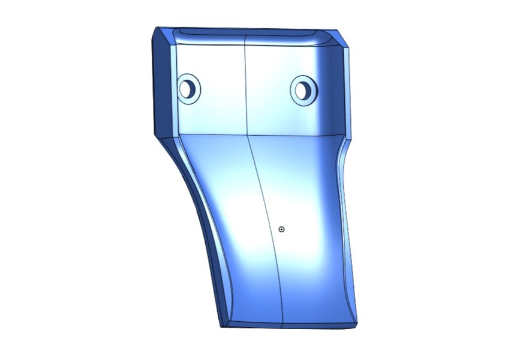

XR80 Rear Mud Flap
This ASA-printed rear mud flap is designed specifically for the 2001 Honda XR80. It bolts in securely just in front of the rear wheel and helps shield the spring and surrounding internals from mud, water, and debris kicked up by the tire. Clean fit, rugged material, and functional protection for riding.